Skills チュートリアル
Skills は、翻訳すると「技能」であり、AI エージェントに専門スキルと知識を追加するために使われます。
人間と同じように、料理ができたり、車を運転できたり、PPT を作成できたり——これらはすべてあなたのスキルです。
エージェントも同じで、あなたの仕事を手伝うにはスキルが必要です。
Skills はエージェントのスキルであり、大規模モデルは「考えて話す」ことを担当し、Skills は「実行する」ことを担当します。
通常の AI と AI エージェントの核心的な違い：エージェントは単なる思考者ではなく、さらに行動者です。
なぜ Agent Skills が必要なのか
AI エージェントは強力な汎用能力を備えていますが、特定の分野のタスクを処理する際には、必要なコンテキストや専門知識が不足していることがよくあります。
例えば、AI エージェントはあなたの会社がどのようなコード規約を使用しているかを知らなかったり、特定の API の使い方を理解していなかったり、特定のビジネスプロセスの具体的な手順がわからなかったりする可能性があります。
Skills の核心的な考え方は次の通りです：人間の専門知識をスキルパッケージにカプセル化し、AI エージェントが必要なときに自動的に読み込んで使用できるようにすることです。
Agent Skills がもたらすもの
| 能力 | 説明 |
|---|---|
| 分野の専門知識 | 特定分野の知識（法律レビュープロセス、データ分析パイプラインなど）を再利用可能な指示とリソースとしてカプセル化する |
| 再現可能なワークフロー | 複数ステップのタスクを一貫性のある監査可能な標準プロセスに変える |
| 製品をまたいだ再利用 | Skill を一度作成すれば、Agent Skills 形式をサポートする任意のツールで使用できる |
Skill がない場合のよくある問題
Skill がない場合、Agent は同じ確認質問を繰り返したり、チーム固有の命名規則を見落としたり、重要なエッジケースを忘れたりする可能性があります。
Skill があれば、これらの経験を直接ファイルに書き込むことができ、Agent は毎回それを守ります。
エージェントと Skills の関係
AI エージェントは、知覚・推論・行動ができる AI システムであり、チャットだけでなくタスクの実行もできます。
Skills は、エージェントにある種のタスクを完了する方法を伝える説明書（Markdown ファイル）であり、その価値はタスク実行を正確・安定・再利用可能にすることにあります。
智能体的大模型 = 大脑（负责理解、决策、说话） Skills = 手和脚（负责动手干活）
想像してみてください。入社したばかりの会社で、あなたにはまったく異なる2つの AI アシスタントがあるとします：
アシスタント A（通常の対話 AI）：
- 一問一答で、受動的に応答します。
- 「四半期レポートの書き方」と尋ねても、汎用テンプレートを渡すだけです。
- スプレッドシートを開けず、自発的にデータを照会できず、ファイルを整理したり送信先に送ったりすることもできません。
- 本質的には、話せるオンライン百科事典に過ぎず、答えを与えるだけで実行はしません。
アシスタント B（AI エージェント）
- 指示がそのまま届き、全自動でクローズドループを完結させます。
- あなたは一言言うだけでいいのです：「今四半期の売上データを整理し、レポートを生成して張社長に送信して」
- それは全プロセスを自律的に完了できます：ファイルの取得、生データの読み取り、グラフの自動生成、完全なレポートの作成、ワンクリックでのメール送信。
- 全行程で手動操作は不要で、結果を待つだけです。

エージェントの三つの核となる能力
| 能力 | 説明 | 例 |
|---|---|---|
| 知覚 | 入力を受け取り、コンテキストを理解する | アップロードされたファイルを読み取り、あなたのニーズを理解する |
| 推論 | 計画を立て、何をするかを決定する | 「まずファイルを読み、次にレポートを生成し、最後にメールを送る」と判断する |
| 行動 | ツールを呼び出し、手順を実行する | 実際にファイルを開き、内容を書き、送信する |
なぜ Skills が必要なのか？それはどのような問題を解決するのか？
通常の AI エージェント（Claude や DeepSeek など）は非常に賢いですが、特定のコンテキストが不足しているとエラーが発生しやすくなります。例えば：
- チームには独自のコード規約があるが、AI に毎回手動でリマインドする必要がある。
- PDF フォームの処理や GitHub Actions のデバッグなどの複雑なプロセスでは、AI がベストプラクティスを知らない可能性がある。
Agent Skills はこれらの問題を解決します：
- 自動トリガー：AI がタスクに応じて関連スキルを自動的に読み込み、長いプロンプトを手動で入力する必要がありません。
- 再利用可能 & 共有可能：一度作成すれば、チーム全体やコミュニティで使用でき、Git によるバージョン管理をサポートします。
- コンテキストの効率的な活用：プログレッシブディスクロージャー（progressive disclosure）を採用し、必要な部分だけを読み込むことで、コンテキストウィンドウのオーバーフローを回避します。
- クロスプラットフォーム：同じ Skill を Claude、VS Code Copilot、Cursor などのツールで使用できます。